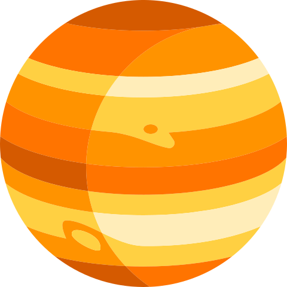

FAQ
Team
Seth Frey is a cognitive and social scientist and professor at the University of California, Davis. He cares about science, and blogs about it at enfascination.com.References and Credit
We relied on several open resources to build this site.- The astronomical positions are calculated using the Swiss Emphemeris
- Many graphics were adapted from flaticon.com icons by Freepik, Nikita Golubev, Smashicons, srip and Twitter.
- The site skeleton was pinched from templates available at startbootstrap.com
- The interactive SVG graphic was based on code for an SVG clock.
Licensing and code
The code for this site is available at github.com. It is licensed under the GPL, as a condition of our use of the Swiss Emphemeris, which is itself GPL'd.Contact
If you'd like to contact our team, send a note to moctodliamg at the same thing backwards.Prior to the 17th century, Europeans used similarity as the basis of finding order in the world. Walnuts looked like brains, therefore they must be good for headaches. A small number of points of light wander among the otherwise fixed background of the stars, the way that human walk amongst plants and trees; the course of those planets must tell us something about the course of our lives.
It was our close relationship to the heavenly bodies that slowly changed the role of similarity, from an objective signature of hidden structure in the world, to a mere signature of structure in the mind. This process was attended by another, that brought the heavenly bodies down to earth.
| The pull of | equals the pull of | at 2m. | ||
| The pull of |  | equals the pull of |
|
at 2m. |
| hi | hi | hi |
Isaac Newton was thinking about cannons, and asked what would happen if a cannonball were shot with such strength that, before it could fall to the ground, the Earth's curvature had moved the ground away. Though this and other thought experiments, Newton showed that we don't need separate sciences for events on Earth and events below it. He unified science, by explaining apples falling on earth and moons orbiting planets with the same mysterious force, gravity.
Gravity is a poorly understood force that causes masses to be attracted to each other. It is very weak: for example, the pull of an office Some people are drawn While some are You may feel drawn to money apples. The pull of an office building on you is a fraction of the strength of a butterfly's wings. It can matter for very large things, planets, stars, blackholes, and, oamong the biggest things on Earth. For example, the first explorers of Mount Everest, the tallest mountain on Earth, had trouble finding stable estimaties of its height, because its extra gravity, as small as it was, was enough to throw off their instruments., until they realized that it's
gravity has also had a role in astrology, as it has adapted to a world in which similarity has retreated to the mind, and in which explanation of causaes and mechanisms is the definitive form of understaning. Following the three century impact of science on thought, astrologists have occasionally ventured to explain the cause of the planets on human fate, to bring astrology into nature. Most explanations focus on gravity, reasoning the patterns of gravitational effects of these massive boidessu my be large, or unique, or peculiar enough to leave some imprint at the moment of birth. But naturalizing astrology must culminate means bringing it to anyone inwill mea bringing . Now that we . This sit. By assuming tha t astrology is natural, and haus cuases in ko known forces, we can reason through. we can identify . we can predict how it was will . we can interfere with . we can learn. bringing astrology into nature means making it changeable, and bringing our fates into our own hands. , that's a premise of this site.
The old way of thinking about the stars persists today, in the form of astrology, an analogue to astronomy that continues to give primacy to similarity as a signature of cosmic order. But it has modernized in other ways, for example, by looking to gravity, that mysterious force, as a source of potential mechanisms for how the planets imprint their characteristics on newborns.
affecand it could be t the stars revolutionized made physics the science of the stars science therevolutionized Slowly, of course,